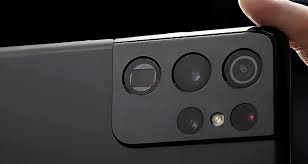
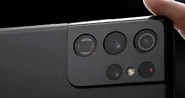

Câmeras compactas

Nos anos 1960 e 1980, as câmeras fotográficas ou de vídeos eram consideravelmente grandes e, em alguns casos, pesadas. Por isso, alguns episódios de Os Jetsons brincavam com a ideia de “câmeras microscópicas” do tamanho de pílulas.
Felizmente, as pessoas não precisaram esperar até 2062 para terem câmeras compactas. Um exemplo disso são os conjuntos fotográficos de celulares modernos, cujo design às vezes lembram uma cartela de comprimido.

Câmeras compactas
Nos anos 1960 e 1980, as câmeras fotográficas ou de vídeos eram consideravelmente grandes e, em alguns casos, pesadas. Por isso, alguns episódios de Os Jetsons brincavam com a ideia de “câmeras microscópicas” do tamanho de pílulas. Felizmente, as pessoas não precisaram esperar até 2062 para terem câmeras compactas. Um exemplo disso são os conjuntos fotográficos de celulares modernos, cujo design às vezes lembram uma cartela de comprimido.
